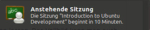
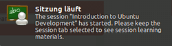
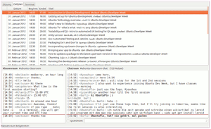
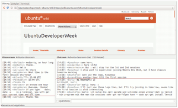
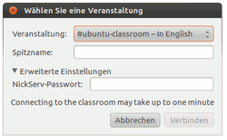
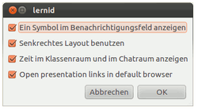

Lernid
Dieser Artikel wurde für die folgenden Ubuntu-Versionen getestet:
Ubuntu 14.04 Trusty Tahr
Zum Verständnis dieses Artikels sind folgende Seiten hilfreich:
Das Programm Lernid kann zur komfortablen Teilnahme an Online-Tutorials eingesetzt werden, die einen IRC-Client voraussetzen. Die Lektionen finden in Form von IRC-Chats statt, die nach einem im englischsprachigen Ubuntu-Wiki (siehe Links) veröffentlichten Zeitplan ablaufen.
Lernid zeigt den Stundenplan zusammen mit zwei IRC-Fenstern in einem Fenster an: Ein Kanal gehört dem vortragenden Referenten, der andere dient den Teilnehmern zum Stellen ihrer Fragen. Über diesen Kanälen ist der aktuelle Stundenplan einsehbar.
Hintergrund¶
Canonical  , die Firma hinter Ubuntu, führt regelmäßig Online-Lektionen durch. Mit deren Hilfe soll Interessierten der Einstieg in die Ubuntu-Welt ermöglicht werden. Lernid wurde, wie Jono Bacon in seinem Blog schrieb , von ihm Ende November 2009 auf dem Rückflug vom Ubuntu Developer Summit in Dallas entwickelt, da es immer wieder Schwierigkeiten gab, neuen Nutzern die Funktionsweise von IRC-Chats nahezubringen: „Idealerweise sollte es ganz einfach sein: Ein Programm starten, eine Veranstaltung auswählen und einloggen.“
, die Firma hinter Ubuntu, führt regelmäßig Online-Lektionen durch. Mit deren Hilfe soll Interessierten der Einstieg in die Ubuntu-Welt ermöglicht werden. Lernid wurde, wie Jono Bacon in seinem Blog schrieb , von ihm Ende November 2009 auf dem Rückflug vom Ubuntu Developer Summit in Dallas entwickelt, da es immer wieder Schwierigkeiten gab, neuen Nutzern die Funktionsweise von IRC-Chats nahezubringen: „Idealerweise sollte es ganz einfach sein: Ein Programm starten, eine Veranstaltung auswählen und einloggen.“
Genutzt wird Lernid unter anderem für die Ubuntuveranstaltungen Ubuntu Open Week, Ubuntu Developer Week und Ubuntu User Days. Es ist quelloffen und unter der GPLv3 lizenziert.
Eigenschaften¶

Einfach teilnehmen: Lernid starten, Nickname eingeben, verbinden. Man braucht kein „IRC-Profi“ zu sein, um an den Veranstaltungen teilnehmen zu können.
Folien in Echtzeit sehen: Folien des Präsentierenden werden in Echtzeit dargestellt, wenn diese für Lernid optimiert sind.
Webseiten in Echtzeit sehen: Möchte der Vortragende den Zuschauern eine Webseite zeigen, kann die Seite im eingebauten Browser angezeigt werden.

Lokalisierte Zeitpläne: Alle Startzeiten der Veranstaltungen werden in lokaler Zeit angezeigt.
Lokalisierung: Lernid ist bisher in 31 Sprachen erhältlich.
Erinnerungsfunktion: Zehn Minuten vor sowie zum Start einer Veranstaltung erscheint ein Hinweis, der den Nutzer an den Vortrag erinnert (siehe nebenstehende Bilder).

Installation¶
Offizielle Paketquellen¶
Lernid ist in den offiziellen Paketquellen enthalten. Es muss folgendes Paket installiert [1] werden:
lernid (universe)
 mit apturl
mit apturl
Paketliste zum Kopieren:
sudo apt-get install lernid
sudo aptitude install lernid
Lernid wurde in Python geschrieben und fällt sehr leichtgewichtig aus. Zur vollen Funktionaltität müssen zusätzlich noch Erlang, Teile von CouchDB und das Kommunikations-Framework Telepathy installiert sein.
Die folgenden zusätzlichen Pakete werden installiert: couchdb-bin desktopcouch erlang-base erlang-crypto erlang-inets erlang-mnesia erlang-public-key erlang-runtime-tools erlang-ssl erlang-syntax-tools erlang-xmerl libmozjs185-1.0 libsctp1 lksctp-tools python-avahi python-couchdb python-desktopcouch-application python-desktopcouch-records python-poppler python-vobject

PPA¶
Es gibt darüber hinaus die Möglichkeit, Lernid über eines von zwei PPA zu installieren. Diese Versionen sind meist neuer und aktueller als die in den Paketquellen angebotenen. Die beiden PPAs unterscheiden sich wie folgt:
Stabile Versionen¶
In diesem PPA liegen die stabilen Versionen von Lernid. Man kann dieses PPA nutzen, wenn eine aktuellere Version als die, die man über die Paketquellen angeboten bekommt, genutzt werden soll:
Adresszeile zum Hinzufügen des PPAs:
ppa:lernid-devs/lernid-releases
Hinweis!
Zusätzliche Fremdquellen können das System gefährden.
Ein PPA unterstützt nicht zwangsläufig alle Ubuntu-Versionen. Weitere Informationen sind der  PPA-Beschreibung des Eigentümers/Teams lernid-devs zu entnehmen.
PPA-Beschreibung des Eigentümers/Teams lernid-devs zu entnehmen.
Damit Pakete aus dem PPA genutzt werden können, müssen die Paketquellen neu eingelesen werden.
Entwicklungsversionen¶
Möchte man hingegen bei der Entwicklung helfen und testen oder ist man an den neuesten Eigenschaften des Programmes interessiert und kann dabei auch mit möglichen (undefinierten) Programmfehlern umgehen, kann man das Entwicklungs-PPA nutzen:
Adresszeile zum Hinzufügen des PPAs:
ppa:lernid-devs/lernid-daily
Hinweis!
Zusätzliche Fremdquellen können das System gefährden.
Ein PPA unterstützt nicht zwangsläufig alle Ubuntu-Versionen. Weitere Informationen sind der PPA-Beschreibung des Eigentümers/Teams lernid-devs zu entnehmen.
Damit Pakete aus dem PPA genutzt werden können, müssen die Paketquellen neu eingelesen werden.
Inbetriebnahme¶
 Nachdem man Lernid gestartet hat, fragt es den Nutzer zuerst nach einer Veranstaltung, die aus einer „Combo-Box“ ausgewählt werden kann. Diese Veranstaltungsliste wird serverseitig gepflegt, so dass alle Nutzer die gleichen Events sehen und wahrnehmen können. Nachdem der Nutzer einen IRC-Nickname (und, wenn vorhanden, das eigene IRC-Passwort) eingegeben und die Schaltfläche Verbinden angeklickt hat, sieht man das Hauptfenster von Lernid.
Dieses zeigt den Stundenplan zusammen mit zwei IRC-Fenstern in einem Fenster an. Per Standard ist oben über die gesamte Breite des Fensters der Stundenplan sichtbar, aus dem man die gewünschte Veranstaltung auswählen kann. Darunter sind die zwei IRC-Kanäle: Der linke Kanal gehört dem vortragenden Referenten („Classroom-Channel“), der rechte dient den Teilnehmern zum Stellen ihrer Fragen („Chat-Channel“).
Nutzung¶
Ein weiterer essentieller Bestandteil des Programms ist die Schaltfläche Question. Dieser befindet sich unterhalb des „Chat-Channels“. Wird sie angeklickt, so wird die eingegebene Frage direkt von einem Bot als Frage an die Instruktoren geleitet und im „Classroom-Channel“ angezeigt.
Im Menü kann man über "Veranstaltung → Open URL in Lernid" einen Link zu einem Online-Tutorial eingeben. Dessen Webseite wird dann in Lernid angezeigt und der Zeitplan, sofern von den Veranstaltern eingepflegt, direkt im Reiter "Zeitplan". Die einzelnen Veranstaltungen werden, sobald sie abgeschlossen sind, mit einem Kreuz markiert. Die aktuelle Veranstaltung ist mit einem Pfeil gekennzeichnet,
Neben dem Reiter "Zeitplan" gibt es noch einen Reiter "Sitzung" und einen Reiter "Terminal". Das Lernid-Terminal ist vom Aufbau und Aussehen her ein „normales“ Terminal und funktioniert auch wie ein solches. Der Reiter "Sitzung" fungiert quasi als Präsentationsfenster: So kann dieses entweder als Browser genutzt werden, um Links anzuklicken, oder aber, sofern von den Veranstaltern eingepflegt, um Präsentationsfolien anzuzeigen, die während einer Veranstaltung gezeigt werden.
Einstellungen¶
 Im Menü kann man über "Bearbeiten → Einstellungen" vier weitere Optionen per Haken an- oder abwählen. Dazu gehören:
ein Symbol im Benachrichtigungsfeld anzeigen lassen
ein senkrechtes Layout benutzen (Stundenplan statt oben dann links, die zwei Chatfenster daneben angeordnet)
die Zeit im Chat- und Klassenraum anzeigen lassen
die gezeigten Links/Folien im Browser statt in Lernid anzeigen lassen
Im Menü kann man des Weiteren über "Ansicht → Vollbild" und "Statusleiste" ein Vollbild oder die Statusleiste anzeigen lassen. Das Vollbild kann man auch über die Taste F11 anzeigen lassen.
Links¶
Offizielle Links:
Lernid – Lernid im offiziellem Ubuntu-Wiki
Lernid – Paketsuche Ubuntu
Lernid – Projektseite bei Launchpad
Lernid-Devs – Entwicklerteam bei Launchpad
Berichterstattung:
Lernid: Software für Ubuntus Klassenzimmer
 – Linux Magazin, 12/2009
– Linux Magazin, 12/2009Introducing Lernid
– Jono Bacons Blogbeitrag, 11/2009
Online-Lektionen:
Ubuntu Open Week – Artikel zur letzten bzw kommenden Open Week
Ubuntu Developer Week – Artikel zur letzten bzw kommenden Developer Week
Ubuntu User Days – Artikel zu den letzten bzw kommenden User Days
- Erstellt mit Inyoka
-
 2004 – 2017 ubuntuusers.de • Einige Rechte vorbehalten
2004 – 2017 ubuntuusers.de • Einige Rechte vorbehalten
Lizenz • Kontakt • Datenschutz • Impressum • Serverstatus -
Serverhousing gespendet von